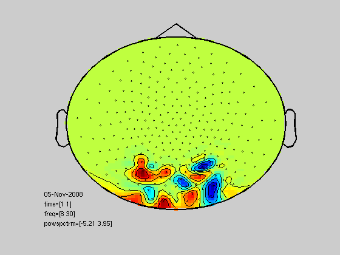

Using statistics_crossvalidate together with FieldTrip data
This example demonstrates how to use neuroimaging data obtained from FieldTrip together with the statistics_crossvalidate function. In the example, we make use of covert attention data of one subject that has already been frequency analyzed.
The data consists of 7 different frequencies at 274 channels at time points [-0.5 0 0.5 1 1.5 2 2.5]. We can expect evoked response after the cue and alpha modulation after about 1 second.
Copyright (C) 2008 Marcel van Gerven
Contents
Classification examples using FieldTrip's statistics_crossvalidate
function statistics_crossvalidate_demo()
Some initialization
fclose('all'); close all clear all format long % fix the RNG in order to reproduce the experiment rand('twister',1); randn('state',1);
load data
load ~/code/classification/toolboxes/bayesbrain/examples/freqli; load ~/code/classification/toolboxes/bayesbrain/examples/freqri; data = {freqLI freqRI}; clear freqLI; clear freqRI;
initialize parameters
cfg = [];
cfg.channel = {'MLO' 'MRO'};
cfg.frequency = [8 30];
cfg.latency = [0.5 2.5];
cfg.avgovertime = 'yes';
create design matrix; this specifies at least the class labels for each example
cfg.design = []; for c=1:length(data) cfg.design = [cfg.design; c*ones(size(data{c}.powspctrm,1),1)]; end
specify crossvalidate as statistical procedure and use discriminant analysis as a classifier
cfg.method = 'crossvalidate';
cfg.classifier = da();
call crossvalidation through freqstatistics
stat = freqstatistics(cfg,data{:});
selected 38 channels averaging over 5 time bins selected 4 frequency bins Warning: PACK can only be used from the MATLAB command line. using "statistics_crossvalidate" for the statistical testing shuffling data validating fold 1 of 10 validating fold 2 of 10 validating fold 3 of 10 validating fold 4 of 10 validating fold 5 of 10 validating fold 6 of 10 validating fold 7 of 10 validating fold 8 of 10 validating fold 9 of 10 validating fold 10 of 10
output classification rate
stat.metric
ans = 0.713725490196078
Look at posteriors of the first fold
stat.post{1}
ans = 0.999999999999524 0.000000000000476 0.881256168810232 0.118743831189768 0.000000000000000 1.000000000000000 0.000000000000000 1.000000000000000 0.999999999991923 0.000000000008077 0.999999999999601 0.000000000000399 0.999999999991022 0.000000000008978 1.000000000000000 0.000000000000000 0.779168285038800 0.220831714961200 0.000105458397935 0.999894541602065 0.003806252613682 0.996193747386318 0.000000000240523 0.999999999759477 0.998739144209726 0.001260855790274 0.999999999741991 0.000000000258009 0.999671777767065 0.000328222232935 0.000000000000000 1.000000000000000 0.999999999999999 0.000000000000001 0.000026721252038 0.999973278747962 0.000000000000007 0.999999999999993 0.081872207331548 0.918127792668452 0.000000000000398 0.999999999999602 0.999999999999969 0.000000000000031 0.000126468494594 0.999873531505406 0.000000000000014 0.999999999999986 0.999999065625460 0.000000934374540
Look at contents of the classification procedure
% the third method of the classification procedure for the first fold
stat.procedure{1}.clfmethods{3}
ans =
da
properties:
data: [230x152 double]
design: [230x1 double]
disfun: 'diagLinear'
coeff: []
verbose: 0
nclasses: 2
Classification using a different classifier
% logistic regression instead of discriminant analysis
cfg.classifier = lr();
stat = freqstatistics(cfg,data{:});
selected 38 channels
averaging over 5 time bins
selected 4 frequency bins
Warning: PACK can only be used from the MATLAB command line.
using "statistics_crossvalidate" for the statistical testing
shuffling data
validating fold 1 of 10
Iteration FunEvals Step Length Function Val Opt Cond
1 2 1.63946e-04 1.36678e+02 4.79207e+03
2 3 1.00000e+00 8.74710e+01 1.86128e+03
3 4 1.00000e+00 7.82253e+01 1.86993e+03
4 5 1.00000e+00 7.32959e+01 1.30979e+03
5 6 1.00000e+00 6.65885e+01 6.48703e+02
6 7 1.00000e+00 5.99861e+01 5.83721e+02
7 8 1.00000e+00 5.15135e+01 6.54868e+02
8 9 1.00000e+00 3.99966e+01 7.02732e+02
9 10 1.00000e+00 2.93905e+01 8.26726e+02
10 11 1.00000e+00 2.04718e+01 3.89474e+02
11 12 1.00000e+00 1.77534e+01 2.19629e+02
12 13 1.00000e+00 1.30898e+01 2.37547e+02
13 14 1.00000e+00 9.87661e+00 2.74442e+02
14 15 1.00000e+00 5.20419e+00 2.56146e+02
15 16 1.00000e+00 4.18096e+00 2.42112e+02
16 17 1.00000e+00 1.53301e+00 7.10551e+01
17 18 1.00000e+00 9.43997e-01 3.71721e+01
18 19 1.00000e+00 5.39955e-01 2.25119e+01
19 20 1.00000e+00 2.89486e-01 9.51152e+00
20 21 1.00000e+00 1.53476e-01 5.34409e+00
21 22 1.00000e+00 7.86262e-02 2.77127e+00
22 23 1.00000e+00 3.99979e-02 2.08579e+00
23 24 1.00000e+00 2.12083e-02 6.08208e-01
24 25 1.00000e+00 1.22527e-02 3.23398e-01
25 26 1.00000e+00 5.83027e-03 1.80169e-01
26 27 1.00000e+00 2.98932e-03 9.15872e-02
27 28 1.00000e+00 1.43457e-03 3.87569e-02
28 29 1.00000e+00 7.20183e-04 2.37491e-02
29 30 1.00000e+00 3.47561e-04 1.07986e-02
30 31 1.00000e+00 1.67496e-04 4.68716e-03
31 32 1.00000e+00 8.63812e-05 2.76035e-03
32 33 1.00000e+00 4.25512e-05 1.14719e-03
33 34 1.00000e+00 2.12712e-05 6.20506e-04
34 35 1.00000e+00 1.05679e-05 2.85585e-04
35 36 1.00000e+00 5.20379e-06 1.51997e-04
Function Value changing by less than TolFun
validating fold 2 of 10
Iteration FunEvals Step Length Function Val Opt Cond
1 2 1.60490e-04 1.36181e+02 4.63723e+03
2 3 1.00000e+00 9.88914e+01 2.37259e+03
3 4 1.00000e+00 8.27101e+01 1.40857e+03
4 5 1.00000e+00 7.48454e+01 7.84319e+02
5 6 1.00000e+00 6.79267e+01 5.61676e+02
6 7 1.00000e+00 5.80121e+01 4.44368e+02
7 8 1.00000e+00 4.51733e+01 3.77411e+02
8 9 1.00000e+00 3.46376e+01 1.06556e+03
9 10 1.00000e+00 2.97636e+01 5.23419e+02
10 11 1.00000e+00 2.66189e+01 2.62310e+02
11 12 1.00000e+00 2.41445e+01 2.47821e+02
12 13 1.00000e+00 2.02680e+01 2.18937e+02
13 14 1.00000e+00 1.29975e+01 3.40458e+02
14 15 1.00000e+00 7.70829e+00 2.62541e+02
15 16 1.00000e+00 6.33652e+00 1.84186e+02
16 17 1.00000e+00 3.58307e+00 8.11907e+01
17 18 1.00000e+00 1.91996e+00 5.37096e+01
18 19 1.00000e+00 9.35746e-01 2.84902e+01
19 20 1.00000e+00 5.06005e-01 2.69249e+01
20 21 1.00000e+00 1.98361e-01 8.55604e+00
21 22 1.00000e+00 1.18407e-01 4.40154e+00
22 23 1.00000e+00 5.62923e-02 1.97144e+00
23 24 1.00000e+00 2.90483e-02 9.60908e-01
24 25 1.00000e+00 1.44669e-02 4.97612e-01
25 26 1.00000e+00 7.28833e-03 2.38627e-01
26 27 1.00000e+00 3.64522e-03 1.31668e-01
27 28 1.00000e+00 1.82607e-03 6.24085e-02
...note the better performance
stat.metric
ans = 0.752941176470588
Using a different number of folds and a different metric
cfg.metric = 'auc'; % area under the ROC curve cfg.cvfolds = 0.8; % use 80% for training and 20% for testing stat = freqstatistics(cfg,data{:}); stat.metric
selected 38 channels
averaging over 5 time bins
selected 4 frequency bins
Warning: PACK can only be used from the MATLAB command line.
using "statistics_crossvalidate" for the statistical testing
shuffling data
validating using 20% of the data for testing
Iteration FunEvals Step Length Function Val Opt Cond
1 2 1.85460e-04 1.21711e+02 4.22097e+03
2 3 1.00000e+00 8.09588e+01 1.45448e+03
3 4 1.00000e+00 7.00298e+01 8.62506e+02
4 5 1.00000e+00 5.92885e+01 8.06635e+02
5 6 1.00000e+00 5.09215e+01 7.06633e+02
6 7 1.00000e+00 4.60068e+01 4.06990e+02
7 8 1.00000e+00 4.07386e+01 3.48759e+02
8 9 1.00000e+00 3.12434e+01 3.08003e+02
9 10 1.00000e+00 2.89184e+01 8.55757e+02
10 11 1.00000e+00 2.01323e+01 3.56996e+02
11 12 1.00000e+00 1.73626e+01 1.98324e+02
12 13 1.00000e+00 1.48701e+01 1.84731e+02
13 14 1.00000e+00 1.04280e+01 1.89602e+02
14 15 1.00000e+00 5.27572e+00 1.74723e+02
15 16 1.00000e+00 2.41556e+00 1.71211e+02
16 17 1.00000e+00 1.70098e+00 1.03237e+02
17 18 1.00000e+00 9.15598e-01 3.57993e+01
18 19 1.00000e+00 5.48992e-01 1.60320e+01
19 20 1.00000e+00 2.95521e-01 8.08207e+00
20 21 1.00000e+00 1.51626e-01 4.14687e+00
21 22 1.00000e+00 7.56113e-02 2.31125e+00
22 23 1.00000e+00 4.00816e-02 1.59987e+00
23 24 1.00000e+00 1.51936e-02 3.86800e-01
24 25 1.00000e+00 9.18461e-03 2.42321e-01
25 26 1.00000e+00 4.29817e-03 1.31849e-01
26 27 1.00000e+00 2.07689e-03 7.92889e-02
27 28 1.00000e+00 1.08737e-03 3.50877e-02
28 29 1.00000e+00 5.31842e-04 1.97528e-02
29 30 1.00000e+00 2.67471e-04 7.72798e-03
30 31 1.00000e+00 1.32780e-04 3.86825e-03
31 32 1.00000e+00 6.60979e-05 2.05532e-03
32 33 1.00000e+00 3.20091e-05 9.13840e-04
33 34 1.00000e+00 1.58869e-05 4.55397e-04
34 35 1.00000e+00 7.87563e-06 2.22277e-04
Function Value changing by less than TolFun
ans =
0.902400000000000
for this classifier we can project parameters back onto the scalp
% get the structure load ~/code/classification/toolboxes/bayesbrain/examples/freqli; % get model in the first fold model = full(stat.procedure.clfmethods{3}.model(1,1:(end-1))); % change dimensions freqLI.time = 1; freqLI.freq = [8 12 20 30]; freqLI.time = 1; freqLI.powspctrm = zeros(274,4,1); freqLI.dimord = 'chan_freq_time'; % set powerspectrum to parameters channels = ismember(freqLI.label,channelselection({'MLO' 'MRO'},freqLI.label)); freqLI.powspctrm(channels,:,:) = reshape(model,size(freqLI.powspctrm(channels,:,:))); % predictive map tcfg.layout = 'CTF274.lay'; topoplotTFR(tcfg,freqLI);
reading layout from file CTF274.lay
end